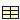

Package with thermophysical properties for glazing systems
Extends from Modelica.Icons.MaterialPropertiesPackage (Icon for package containing property classes).
| Name | Description |
|---|---|
|  Generic | Thermal properties of glazing systems |
| SingleClear3 | Single pane, clear glass 3mm |
| DoubleClearAir13Clear | Double pane, clear glass 3mm, air 12.7, clear glass 3mm |
| TripleClearAir13ClearAir13Clear | Triple pane, clear glass 3mm, air 12.7, clear glass 3mm, air 12.7, clear glass 3mm |
 Buildings.HeatTransfer.Data.GlazingSystems.Generic
Buildings.HeatTransfer.Data.GlazingSystems.Generic
Thermal properties of glazing systems

Extends from Modelica.Icons.Record (Icon for records).
| Type | Name | Default | Description |
|---|---|---|---|
| Boolean | haveExteriorShade | false | Set to true if window has an exterior shade (at surface a) |
| Boolean | haveInteriorShade | false | Set to true if window has an interior shade (at surface b) |
| Generic | glass[:] | Layer by layer declaration of glass layers, starting from outside to room-side | |
| Generic | gas[:] | {Buildings.HeatTransfer.Data... | Layer by layer declaration of glass layers, starting from outside to room-side |
| Generic | shade | Shade | |
| CoefficientOfHeatTransfer | UFra | U-value of frame [W/(m2.K)] | |
| Emissivity | absIRFra | 0.8 | Infrared absorptivity of window frame [1] |
| Emissivity | absSolFra | 0.5 | Solar absorptivity of window frame [1] |
Buildings.HeatTransfer.Data.GlazingSystems.SingleClear3
Single pane, clear glass 3mm
| Type | Name | Default | Description |
|---|---|---|---|
| Boolean | haveExteriorShade | false | Set to true if window has an exterior shade (at surface a) |
| Boolean | haveInteriorShade | false | Set to true if window has an interior shade (at surface b) |
| Generic | glass[:] | {Glasses.ID102()} | Layer by layer declaration of glass layers, starting from outside to room-side |
| Generic | gas[:] | {Buildings.HeatTransfer.Data... | Layer by layer declaration of glass layers, starting from outside to room-side |
| Generic | shade | Shade | |
| CoefficientOfHeatTransfer | UFra | 3 | U-value of frame [W/(m2.K)] |
| Emissivity | absIRFra | 0.8 | Infrared absorptivity of window frame [1] |
| Emissivity | absSolFra | 0.5 | Solar absorptivity of window frame [1] |
Buildings.HeatTransfer.Data.GlazingSystems.DoubleClearAir13Clear
Double pane, clear glass 3mm, air 12.7, clear glass 3mm
| Type | Name | Default | Description |
|---|---|---|---|
| Boolean | haveExteriorShade | false | Set to true if window has an exterior shade (at surface a) |
| Boolean | haveInteriorShade | false | Set to true if window has an interior shade (at surface b) |
| Generic | glass[:] | {Glasses.ID102(),Glasses.ID1... | Layer by layer declaration of glass layers, starting from outside to room-side |
| Generic | gas[:] | {Gases.Air(x=0.0127)} | Layer by layer declaration of glass layers, starting from outside to room-side |
| Generic | shade | Shade | |
| CoefficientOfHeatTransfer | UFra | 1.4 | U-value of frame [W/(m2.K)] |
| Emissivity | absIRFra | 0.8 | Infrared absorptivity of window frame [1] |
| Emissivity | absSolFra | 0.5 | Solar absorptivity of window frame [1] |
Buildings.HeatTransfer.Data.GlazingSystems.TripleClearAir13ClearAir13Clear
Triple pane, clear glass 3mm, air 12.7, clear glass 3mm, air 12.7, clear glass 3mm
| Type | Name | Default | Description |
|---|---|---|---|
| Boolean | haveExteriorShade | false | Set to true if window has an exterior shade (at surface a) |
| Boolean | haveInteriorShade | false | Set to true if window has an interior shade (at surface b) |
| Generic | glass[:] | {Glasses.ID102(),Glasses.ID1... | Layer by layer declaration of glass layers, starting from outside to room-side |
| Generic | gas[:] | {Gases.Air(x=0.0127),Gases.A... | Layer by layer declaration of glass layers, starting from outside to room-side |
| Generic | shade | Shade | |
| CoefficientOfHeatTransfer | UFra | 1.4 | U-value of frame [W/(m2.K)] |
| Emissivity | absIRFra | 0.8 | Infrared absorptivity of window frame [1] |
| Emissivity | absSolFra | 0.5 | Solar absorptivity of window frame [1] |